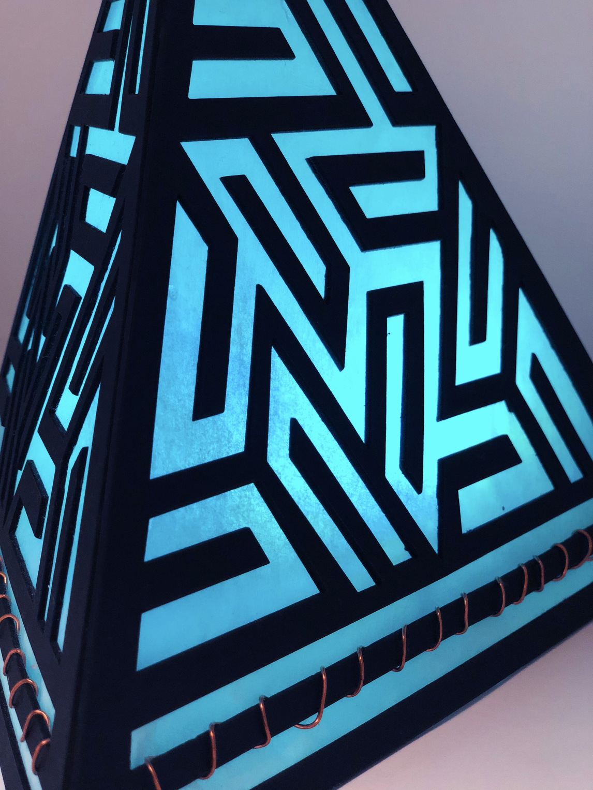
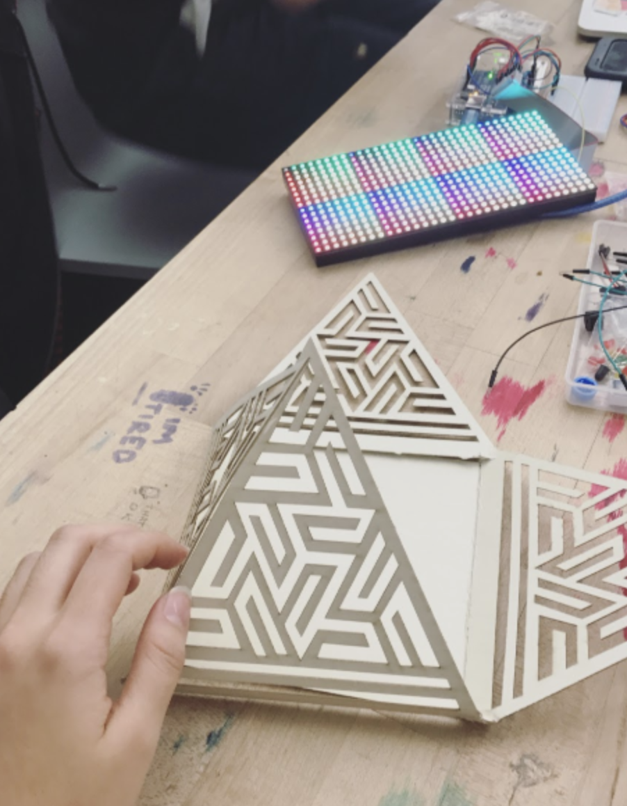
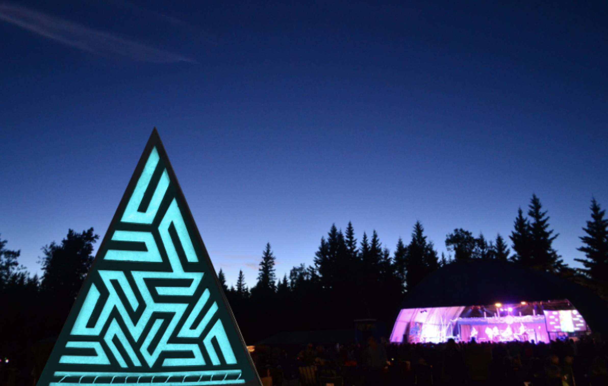

The design for this Light Pyramid was inspired by geometric tesselations,
which are repeated patterns in a geometric form.
Created with laser cut Black illustration board, Tracing paper, Copper wire,
Arduino and a battery, Neopixel ring, and Code in Processing.

Constraints
I wanted to create a futuristic lamp that incorporated touch sensors and change in colors. The code uses the AnalogTouch library to sense touch through the copper wire and the FastLED library to change colors on the Neo-pixel ring each time through Demo reel 100.
THE PROCESS
The original iteration of the lamp was this simplified cube shape below, made of folded textured paper. I tested the code and touch sensors and then focused on the design of the lamp.

Lamp as a blown up design for a festival installation.